Une page à propos des 3 grandes religions monothéistes : Christianisme, Islamisme, Judaïsme. Page mise en ligne pour la première fois le jeudi 5 décembre 2024.
Quelques Mystiques Chrétiennes, quelques Chrétiens
Luisa Piccarreta
Présentation de Luisa Piccarreta, quelques considérations
Pour résumer : une Mystique italienne. Sur ce site, je l'ai souvent citée. Luisa Piccarreta aurait vécu de la fin du XIXᵉ siècle au milieu du XXᵉ. Pendant des décennies alitée et en communication avec le Fils. Aurait rédigé le "livre du Ciel", dicté pour majeure partie par le Fils. Taille de l'œuvre en format "livre de poche" : au moins 5000 pages, sur 36 "tomes" (ou cahiers).
Position/statut de Luisa Piccarreta par rapport au Fils et à Marie
De ce que j'ai compris, Luisa Piccarreta tiendrait la troisième place. 1.La Trinité 2.Marie/Reine du Ciel 3.Luisa Piccarreta
Un extrait à propos de Luisa Piccarreta, extrait issu du livre du Ciel D'autre part, afin que ma Volonté soit connue et que le Ciel s'ouvre pour la laisser descendre sur la terre afin qu'elle puisse y régner comme elle le fait au Ciel, J'ai eu à choisir une autre petite parmi toutes les générations. Puisqu'il s'agit de la plus grande œuvre que je veux accomplir - restaurer l'homme dans ses origines et lui ramener la Divine Volonté qu'il a rejetée, - lui ouvrir mes bras et le recevoir de nouveau au sein de ma Volonté, mon infinie Sagesse appelle la plus petite, sortie de rien. Il était juste qu'elle fut petite: - si J'ai placé une petite à la tête de la Rédemption, - Je devais placer une autre petite à la tête du « que ta Volonté soit faite sur la terre comme au Ciel. » Avec deux petites, Je devais réaliser -l'objectif de la création de l'homme, -mes desseins sur lui. À travers l'une, - Je devais racheter l'homme, - le laver de sa laideur avec mon Sang et - lui accorder le pardon. A travers l'autre, je devais ramener l'homme - à ses origines, - à sa noblesse perdue, - aux frontières de ma Volonté qu'il avait franchies, l'admettre de nouveau devant le sourire de mon Éternelle Volonté, afin que Nous puissions Nous embrasser l'un l'autre et vivre l'un dans l'autre. Le but de la création de l'homme n'était rien d'autre que cela. Ce que J'ai décidé, personne ne peut s'y opposer. Les siècles peuvent s'écouler mais, -tout comme la Rédemption a été réalisée, -l'homme va revenir dans mes bras tel que prévu lors de sa création. Pour ce faire, J'ai dû d'abord choisir celle qui serait la première à vivre dans ma Volonté Éternelle, -la lier à toute la création, et -vivre avec elle sans séparation de nos volontés, sa volonté et la nôtre ne faisant qu'un. Tome 16-– D'où la nécessité qu'elle fut la plus petite, issue de la création de manière à ce que, -en se voyant si petite, elle veuille fuir sa volonté en la liant étroitement à la nôtre au point de ne jamais faire la sienne , et que, bien que petite, elle puisse vivre avec Nous à partir du souffle par lequel nous avions créé l'homme. Notre Volonté l'a gardée fraîche et belle Elle est notre sourire, notre amusement. Et nous faisons d'elle ce que nous voulons. Oh! comme elle est heureuse! Jouissant de sa petitesse et de son heureuse destinée, -elle a supplié pour ses frères et -elle n'a rien fait d'autre que de compenser pour eux auprès de Nous pour tout le mal qu'ils nous font en demeurant détachés de notre Volonté. 10 novembre 1923 - -Le livre du Ciel
Avenir de cette partie sur Luisa Piccarreta
À priori, "au fil du temps", je devrais revenir sur ce livre du Ciel et faire dans cette partie, quelques considérations.
La série de films star wars et la divine volonté du livre du Ciel
La force, le côté obscur, les Jedis, tout serait vrai aussi... dans le monde réel?
Il me sembla y avoir comme une ressemblance entre divers concepts du livre du Ciel et divers passages de star wars. - la force : la divine volonté - les jedis : les saints - le côté obscur : le diable, les démons, les puissances démoniaques
La force, le côté obscur, ces concepts dont il est question dans les films star wars seraient vrais aussi dans le réel? Pas simplement dans ce film? Et même plus vrais dans le réel que dans ce film?
À l'occasion de ce lundi 16 décembre 2024, j'ai fait un montage star wars. Sur la base du trailer de star wars 7. Star wars 7 qui sortit au cinéma le 16 décembre 2015, en france. (source youtube du trailer : https://www.youtube.com/watch?v=mH9Ygfs5avo)
Film à l'occasion du lundi 16 décembre 2024
(montage vidéo, au moins quelque peu édité depuis le 16 décembre 2024) Quelques Gens apparaissant dans cette vidéo:
La ''divine Volonté'' du livre du Ciel et la force de star wars
Le livre du ciel, 1er Mai 1926. Le Fils à Luisa Piccarreta "Ma volonté est en perpétuel mouvement. Elle ne s'arrête jamais. Si son mouvement cessait, ce qui est impossible, la Création n'aurait plus de vie, le Soleil, le ciel étoilé, les arbres, l'eau, le feu, les créatures, tout se dissoudrait dans le néant Ceci signifie que ma Volonté avec son évolution éternelle, -est la vie de toute chose créée, -Elle lie tout, -Elle est plus que l'air qui permet de respirer, développer, pousser tout ce qui sort de nos mains. Tu comprends donc l'affront subi par les créatures, qui, alors qu'Elle est la vie de tout et le centre de toute chose, sans Elle rien ni aucun bien n'existerait, ne veulent reconnaître ni sa domination, ni que sa vie qui coule en elles C'est pourquoi celle qui reconnaît la Vie de ma Volonté en elle et en toute chose, est le triomphe de notre Volonté et la conquête de nos victoires, elle est la contrepartie de notre amour au mouvement perpétuel, notre Volonté la liant à toute la Création, lui faisant faire tout le bien opéré par ma propre Volonté. Par conséquent, tout lui appartient et moi Je l'aime tellement, au point de ne savoir rien faire sans elle, du fait que, en vertu de ma Volonté, nous sommes la même vie, le même amour, une seule palpitation, un seul soupir." Le livre du Ciel tome 19, téléchargé depuis lumenluminis
Quelques propos du personnage yoda, dans le film star wars 5
La divine Volonté
Nous serions tous investis de cette divine Volonté (ce qui serait la force dans star wars), je mettrai peut-être plus tard des extraits du livre du Ciel, à ce propos. Mais même si nous serions tous investis de cette Divine Volonté, il y aurait tout de même des différences entre les uns et les autres, par rapport à cette Divine Volonté. Peut-être plus tard aussi, je mettrai au moins un extrait du livre du Ciel, à ce propos.
En plus de Luisa Piccarreta, sur ce site Agneau, j'ai assez souvent rédigé sur Maria Valtorta. S'il se trouve qu'elle rédigea sans rature une grande partie de son œuvre, que ce soit l'Évangile tel qu'il m'a été révélé ou ses cahiers de 195 à 1950, ceci serait vraiment impressionnant. Jamais bien compris quelle fut la rationalité de ceux qui la rejetèrent abruptement, sur la base de quelques passages.
Personnellement, un passage qui dut m'interroger, concernant Maria Valtorta, ce fut un passage sur les Extra-terrestres. Selon ce passage qui lui aurait été dicté par le Fils, (je crois c'était au cours des dictées sur l'évangile tel qu'il m'a été révélé) il y aurait des millions d'autres mondes que le notre. Des mondes habités... Et la terre serait la plus corrompue. Étonnant. Que la terre soit relativement corrompue.. ok, mais la plus corrompue, sur des millions de mondes... Est-ce qu'une partie de l'œuvre de Maria Valtorta aurait été "trafiquée"? Cette partie sur les Extra-terrestres?
Monsignor Volpi, seguendo gl’insegnamenti di San Paolo della Croce, per eludere gl’inganni del demonio davanti alle apparizioni, disse a Gemma: Disprezza le apparizioni. Io te lo comando. Quando senti o vedi immagini di Gesù o di Maria, manda uno sputo contro di loro, intendendo disprezzare il demonio che ti vuole ingannare. A questi atti di disprezzo compiuti da Gemma per ubbidienza non si offendevano né Gesù, né la Madonna e né gli Angeli ed i Santi che le apparivano, che anzi le davano segni di gradimento. Un giorno le apparve l’Angelo Custode e la Santa gli diede uno sputo, cercando di respingerlo. L’Angelo non si allontanò, anzi dove cadde lo sputo ai piedi dell’Angelo, apparve una rosa bianca, sulle cui foglie stava scritto a lettere d’oro: «Dall’amore tutto si riceve». Dice la Santa: Povero Gesù! Alcune volte gli ho sputato in faccia e Lui stava buono buono, mi guardava, sorrideva e mi accarezzava.
Monseigneur Volpi, suivant les enseignements de saint Paul de la Croix, pour déjouer les tromperies du diable devant les apparitions, dit à Gemma : Méprise les apparitions. Je te commande. Lorsque vous entendez ou voyez des images de Jésus ou de Marie, crachez-leur dessus, dans l'intention de mépriser le diable qui veut vous tromper. A ces actes de mépris accomplis par Gemma par obéissance, ni Jésus, ni Notre-Dame, ni les anges et les saints qui lui sont apparus, qui lui ont en effet donné des signes d'approbation, n'ont été offensés. Un jour, l'Ange Gardien lui apparut et le Saint lui donna un crachat, essayant de le repousser. L'Ange ne s'éloigna pas, au contraire, là où la broche tomba aux pieds de l'Ange, apparut une rose blanche, sur les feuilles de laquelle était écrit en lettres d'or : « De l'amour on reçoit tout ». La Sainte dit : Pauvre Jésus ! Parfois je lui crachais au visage et il était bon, me regardait, souriait et me caressait.
J'ai déjà vu plusieurs pages du site https://www.foi-vivifiante.fr et écouté diverses vidéos de ce site. Je dirais qu'il me sembla présenté sur ce site une des perceptions les plus justes qui soit. Si ce ne fut sur certains points:
La "conviction" de Françoise Breynaert qu'il y aurait un bel avenir.
Sa conception du système scolaire et du système professionnel.
Françoise Breynaert me sembla assez convaincue que le retour glorieux du Fils se ferait sans présence physique.
Par ailleurs, elle me sembla assez convaincue sur la notion d'âme sœur.
Françoise Breynaert - L'école et les systèmes professionnels
"Vous pouvez faire des études d'architecte, de tout ce que vous voulez. Y a un bel avenir"
"Il faut dire aux jeunes attention vous avez un bel avenir".
Pourquoi faudrait-il dire aux jeunes qu'ils ont un bel avenir. Encore faudrait-il que ce soit vrai, non? Or ceci serait-il vrai? Eh bien, ils auraient un"bel avenir", mais sous condition(s), peut-être, non, tout de même? Et puis un "bel avenir", - peut-être pas tout de suite et - peut-être pas pour tout le monde Encore faudrait-il que cette planète ne sembla pas sous possession démoniaque généralisée, pour qu'il puisse y avoir un bel avenir. Je ne saurais trop s'il exista et existe encore un purgatoire et/ou un enfer, mais le système scolaire et diverses situations dans le système professionnel occidental "adulte" risquent peut-être d'aggraver le risque de vous y amener.
Je dirais on peut être aussi parfois en université sous aura "démoniaque" et avoir un avenir pourri si on stagne dans ces universités. Pour Françoise Breynaert, probablement, de son temps, l'école n'était pas encore mixte en genre?
À se demander si elle, ou d'autres de son âge ou environ, se seraient rendu compte de ce que serait devenu ce système scolaire. Françoise Breynaert aurait-elle été plutôt sur un petit nuage en croyant qu'il suffirait "d'aller à l'école", et d'avoir des bonnes notes à l'école et que tout irait forcément bien?
J'eus comme un doute que Françoise Breynaert et beaucoup de Créatures de sa génération, se rendirent compte de la gravité que représentait le système scolaire occidental actuel et, en général, les systèmes professionnels occidentaux actuels.
Par moment, elle déclara que l'on pouvait devenir architecte et réussir sa vie et je ne suis plus tout à fait sûr (il faudrait que je retrouve les vidéos) mais dans d'autres vidéos, je crois me souvenir qu'aussi elle parla du parcours scolaire comme quelque chose de bien et qu'elle déclara ceci sans émettre de consignes de sécurité.
Par rapport à Françoise Breynaert, j'ajouterais tout de même, qu'à travers ce système scolaire occidental mixte actuel, on peut aussi la rater, son existence. Personnellement, si un Garçon ou une Fille avait les moyens d'éviter ce système scolaire, je lui conseillerais plutôt de rester tranquille, en relative sécurité, à domicile, et que si il(ou elle) a envie d'étudier l'architecture ou autre, il est évident qu'il (ou elle) peut aussi le faire tranquillement à domicile (en consultant à domicile des données sur l'architecture, ou par exemple en regardant des reportages, des documentaires). De plus, en l'état actuel du monde, avant d'orienter une Créature vers des métiers du monde, je l'orienterais vers la théologie et/ou vers les couvents ou les monastères, ou à domicile. ⚠️ Professionnellement, ce n'est peut-être pas la peine d'aller en première intention, vers des milieux professionnels eux-mêmes situés pour beaucoup dans une société moderne globalement agnostique, mixte, dangereuse pour la libido, démoniaque, plutôt que de rester dans des milieux relativement protégés.
(Luisa Piccarreta, alitée pendant des décennies, et autres grandes figures du catholicisme, auraient ainsi été mises à l'écart des "affaires du monde", par le Christ.)
Françoise Breynaert - Le retour glorieux du Christ
D'après Françoise Breynaert, il me sembla que ce devait être virtuel. L'abbé Veyron, dans un schéma d'une de ses vidéos, ne me sembla pas du même avis. Un passage de Maria Valtorta me sembla aller dans le sens que ce ne pourrait être que "virtuel", pour le Fils.
Dieu ne devrait pas revenir une deuxième fois en "chair et en os"? Un extrait de Maria Valtorta, du 7 janvier 1944
Cet extrait en langue italienne :
Traduction de cet extrait :
Nel mio vero, unico Vangelo, è detto:[13] “Io sono il Dio di Abramo, il Dio di Isacco, il Dio di Giacobbe. Non il Dio dei morti ma dei vivi”. Abramo è vissuto una volta. Isacco è vissuto una volta. Giacobbe è vissuto una volta. Tu vivrai una volta. Io che sono Dio ho preso carne una volta e non la prenderò una seconda, perché anche Dio rispetta l’ordine. E l’ordine della vita umana è questo: Che ad una carne si fonda uno spirito per rendere l’uomo simile a Dio, il quale non è carne ma spirito, non è animale ma soprannaturale. Che quando la carne tramonta, alla sua sera, cada come spoglia e rivestimento nel nulla da cui fu tratta e lo spirito torni alla vita sua: beata se visse, dannata se perì per avere fatto della carne il suo signore invece di fare Dio signore del suo spirito. http://www.valtortamaria.com/operaminore/quaderno/2/manoscritto/5/7-gennaio-1944 7 gennaio 1944. 7 janvier 1944 Dictée à Maria Valtorta
Il est dit, dans mon seul et vrai Évangile: "Je suis le Dieu d’Abraham, le Dieu d’Isaac et le Dieu de Jacob. Non pas le Dieu des morts, mais des vivants [1]." Abraham a vécu une fois. Isaac a vécu une fois. Jacob a vécu une fois. Tu vivras une fois. Moi, qui suis Dieu, j’ai pris chair une seule fois et ne la prendrai pas une seconde, parce que Dieu lui-même respecte l’ordre. Or l’ordre de la vie humaine est le suivant : Un esprit fusionne avec une chair pour rendre l’homme semblable à Dieu, qui n’est pas chair mais esprit, non pas animal mais surnaturel. Quand la chair dépérit lorsque vient son crépuscule, elle tombe comme une dépouille, telle un simple revêtement, dans le néant dont elle fut tirée, et l’âme retourne à sa vie : bienheureuse si elle vit, mais damnée si l’homme a fait de sa chair son seigneur au lieu de faire de Dieu le seigneur de son âme. 7 janvier 1944 Dictée à Maria Valtorta
Autres extraits de Maria Valtorta qui iraient dans le sens que le Fils n'aurait pas même chair que lors de la première venue, lors de son retour🆕
Je viendrai, avec ma Chair glorifiée, rassembler les créatures pour la dernière bataille contre l’Ennemi; je jugerai, splendidement revêtu de ma Chair glorifiée, les corps revenus à la vie pour le jugement; je retournerai pour toujours au Ciel après avoir condamné à la mort éternelle les chairs qui ne voulurent pas devenir des esprits; et je vous reviendrai, Roi éclatant d’un peuple éclatant en qui l’œuvre du Père, du Fils, de l’Esprit sera glorifiée par la création du corps humain parfait, tel que le Père l’avait créé en Adam, beau d’une indescriptible beauté, grâce à la rédemption de la semence d’Adam par l’œuvre du Fils et la sanctification opérée par l’Esprit."
Un retour du Fils qui serait simplement virtuel?
1. "Attention, c'est une venue glorieuse, il ne va pas revenir corporellement". Pas corporellement? En quoi l'adjectif "glorieuse" s'opposerait à présence physique matérielle? Serait-ce un à priori infondé? Je n'ai pas encore parcouru tout le site de Françoise Breynaert, alors peut-être donna-t-elle des sources quelque part, je ne préjuge pas pour l'instant que ce ne fut pas le cas. Update du mardi 26 novembre 2024 : s'il se trouve qu'un des passages de Maria Valtorta (du 7 janvier 1944) est authentique, vrai : alors oui, pour le Fils, ce ne pourrait être un retour que "virtuel", pas dans un corps physique, en tout cas.
2."Il serait vulnérable". Vulnérable? N'aurait-il, du moins, des anges pour le protéger?
3."Il ne va pas exercer de pouvoir par une contrainte physique." ? Et s'il y a des tremblements de terre, des épidémies, ceci est bien physique tout de même non? Si Il fait venir des anges qui s'occupent des Créatures. De plus, si c'est Lui qui régit le monde, le climat... Je dirais plutôt : Il ne devrait pas laisser les hommesexercer de contrainte physique, la volonté Humaine, exercer de contrainte physique. (Mais les anges, je suspecte (je ne sais pas non plus) Il devrait les laisser faire, et laisser faire les hommes s'ils sont avec divine volonté. (Peut-être parce qu'ainsi, s'ils laissent faire les hommes sous condition qu'ils soient dans la divine volonté, ce serait comme s'il se laissait faire lui-même?)).
Par rapport aux Judaïsants et aux Musulmanisans, (quoique je suis moins sûr pour les Musulmanisans) les Christianisants, auraient été les seuls à concevoir que Dieu se fit homme, mais pourquoi certains d'entre eux auraient-ils la conviction que lors de son éventuelle deuxième venue aussi, il ne pourrait aussi se faire homme (même, peut-être ne serait-ce que par intermittence)? Certains Musulmanisans, avec leur foi pour le Mahdi et certains Judaïsants, avec leur foi pour le Machia'h, ne purent-ils sembler plus terre-à-terre? (Par rapport à certains Christianisants)
Pour ma part, je n'aurais pas de conviction comme Françoise Breynaert sur ces 3 points : un retour non corporel, une vulnérabilité si c'était un retour corporel, aucune contrainte physique. Pour le moment, je n'écarte pas qu'il ne revienne pas corporellement, mais je n'écarte pas l'inverse non plus. Mais pourquoi me sembla-t-elle avoir des convictions sur ces trois points? Je vis qu'elle se basa, du moins, sur un passage de Daniel. (De mémoire, je crois elle en parla dans une vidéo ultérieure à cette vidéo dans laquelle elle évoquait que le retour ne serait pas physique.) Daniel 7:13?
Je regardai pendant mes visions nocturnes, et voici, sur les nuées des cieux arriva Quelqu'un de semblable à un fils de l'homme; il s'avança vers l'ancien des jours, et on le fit approcher de lui.
En quoi ce verset impliquerait un retour virtuel? Je n'ai pas compris, pour l'instant. (Comme précédemment évoqué, je n'ai pas encore parcouru, au mardi 26 novembre 2024, tout le site foi-vivifiante, alors peut-être dans le futur trouverais-je des sources qui iraient dans le sens que venue glorieuse = forcément pas de présence physique).
Retour glorieux du Fils/Christ. Françoise Breynaert en contradiction avec l'abbé Veyron?
Capture d'écran d'une vidéo de la chaîne bible et savoir, de l'abbé Veyron. J'y ai rajouté une ellipse rouge clignotante. https://www.youtube.com/watch?v=o623dW9aA5o Dans la capture d'écran ci-contre, depuis la chaîne bible et savoir, il y aurait présence physique.
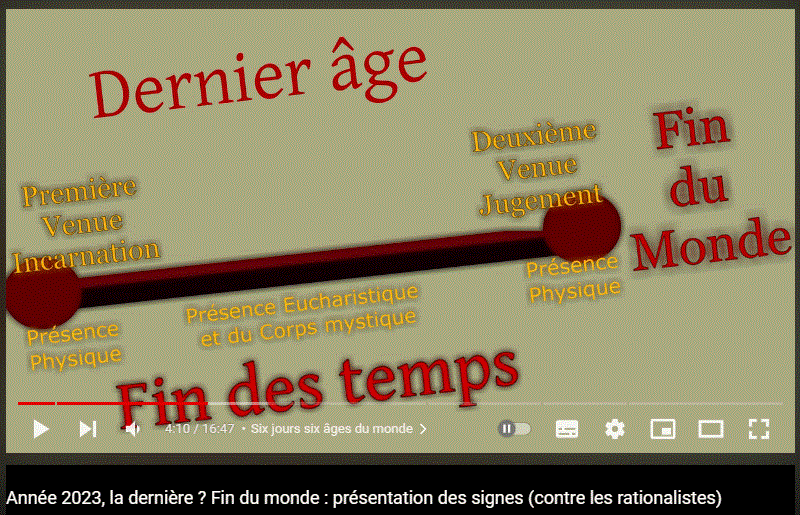
Un passage de Maria Valtorta qui me sembla aller dans le sens que le Fils ne reprendra pas corps
Il n'y aurait pas de réincarnation, et pas 2 corps. D'après le passage suivant, de Maria Valtorta, Le Fils ne devrait pas reprendre corps. De quoi, pour le moins, suspecter que le Fils ne peut pas être aussi le Mahdi, le Machia'h ou le grand Monarque.
Jésus dit : "Voici ce qui est dicté pour toi, ô homme qui m’est cher en dépit de tes erreurs, toi, la brebis perdue pour laquelle j’ai marché et versé mon sang pour t’indiquer la voie de la Vérité. Cette instruction est pour toi. C’est une lumière pour toi. Ne refuse pas mon don. Ne commets pas le sacrilège de penser qu’une autre parole est plus juste que celle-ci. Celle-ci est la mienne. C’est ma voix qui, depuis des siècles, est la même, sans changer, sans se contredire, sans se renouveler au fil des siècles parce qu’elle est parfaite et que le progrès n'a aucune incidence sur elle. Vous, vous pouvez vous mettre à jour. Pas moi, qui suis comme au premier jour de mon enseignement tout comme je suis de toute éternité en ma nature. Je suis la Parole de Dieu, la Sagesse du Père. Il est dit, dans mon seul et vrai Évangile: "Je suis le Dieu d’Abraham, le Dieu d’Isaac et le Dieu de Jacob. Non pas le Dieu des morts, mais des vivants [1]." Abraham a vécu une fois. Isaac a vécu une fois. Jacob a vécu une fois. Tu vivras une fois. Moi, qui suis Dieu, j’ai pris chair une seule fois et ne la prendrai pas une seconde, parce que Dieu lui-même respecte l’ordre. Or l’ordre de la vie Humaine est le suivant : Un esprit fusionne avec une chair pour rendre l’homme semblable à Dieu, qui n’est pas chair mais esprit, non pas animal mais surnaturel. Quand la chair dépérit lorsque vient son crépuscule, elle tombe comme une dépouille, telle un simple revêtement, dans le néant dont elle fut tirée, et l’âme retourne à sa vie : bienheureuse si elle vit, mais damnée si l’homme a fait de sa chair son seigneur au lieu de faire de Dieu le seigneur de son âme. De l'au-delà, dont vous désirez inutilement connaître les détails sans vous contenter de croire à son existence, cette âme vous attend en tremblant de peur ou avec des frémissements de joie de voir la chair ressusciter pour s’en revêtir au dernier jour de la Terre et avec elle être précipitée dans l’Abîme ou entrer au ciel glorifiée jusque dans la matière avec laquelle vous avez remporté la victoire : en effet, de votre ennemie naturelle, vous vous serez fait une alliée surnaturelle. Mais comment pourriez-vous revêtir une chair au moment de ma visite sublime et, avec elle, aller à la condamnation ou à la gloire, si chaque âme avait eu plusieurs chairs ? Laquelle serait choisie ? La première ou la dernière ? Si, selon vos théories, la première a permis l’accession de l’esprit à la seconde, c’est déjà une chair méritoire, et même plus digne que les autres de posséder le ciel, puisque c’est la première victoire qui coûte. Après cette accession, elle est entraînée. Mais si seuls les parfaits doivent aller au ciel, comment la première peut-elle y aller ? Il serait injuste d’en exclure la première de vos chairs, et tout aussi injuste de penser qu’il en irait de même de la dernière de vos chairs, qu’une théorie néfaste vous fait croire que votre esprit peut revêtir, en une série ascendante, en s’incarnant, se désincarnant pour se réincarner comme un habit que l’on enlève le soir pour le reprendre le lendemain matin. Et comment pourriez-vous invoquer les bienheureux s’ils étaient déjà réincarnés ? Comment traiter vos défunts de vôtres, s’ils sont au même moment les Enfants d’autres personnes ? Non. L’âme vit. Bien qu’elle soit créée, elle ne sera plus détruite. Elle vit dans la Vie si elle a mené, sur la terre, l’unique vie qui vous soit permise, celle d’Enfants de Dieu. Elle vit dans la Mort si elle a vécu sur la terre en fils de Satan. Ce qui est à Dieu retourne à Dieu pour l’éternité. Ce qui est de Satan retourne à Satan pour l’éternité. Ne dites pas : C’est mal. " Moi qui suis la Vérité, je te dis que c’est le bien suprême. Si vous viviez mille vies, vous deviendriez mille fois les souffre-douleur de Satan, et vous ne sauriez pas toujours en sortir blessés mais vivants. Mais puisque vous vivez une seule fois et que vous savez que votre destin se joue à ce seul moment, si vous n’êtes pas de nauséabonds adorateurs de la Bête, agissez au moins avec ce minimum de bonne volonté qui me suffit pour vous sauver.
S'il se trouve que ce passage st bien authentique. Il y aurait de quoi déduire que le Fils ne reprendra pas corps. Est-ce que ceci signifierait que le Saint-Esprit non plus? Le Père non plus?
Françoise Breynaert - Conception par rapport à la force physique - Confusion sur le véritable djihad?
Avec Jean-Marcel Gaudreault elle me sembla comprendre ce point important.
"Le jugement des mauvais n'appartient qu'à Dieu.
"On n'amène pas la divine volonté par la puissance militaire"
"Les Chrétiens ne sont pas des djihadistes, au contraire" Je dus me demander s'il y eut une confusion dans cette conception qu'elle eut. Parce que de base, c'est qu'elle associa djihad à violence. Est-ce que de base le véritable islam, l'islam authentique aurait été pacifique? Ou faudrait-il plutôt croire Maria D'agréda (sous condition que ses textes n'aient pas été "trafiqués") Les véritables d'jihadistes, les djihadistes de Mahomet seraient des Gens qui seraient dans la paix, l'amour et Dieu? Si tel fut le cas, dans cette phrase, j'estime, il y aurait confusion islam de daech, etc., avec islam authentique. Confusion que je dirais assez typique, chez beaucoup d'occidentaux.
Si une nouvelle croisade (la dixième croisade ou première croisade de la divine volonté, dépend comment l'on compte) arrivait, alors j'estime cette croisade serait Chrétienne, musulmane et pourrait aussi s'appeler un djihad?
"Les Chrétiens ne sont pas des djihadistes, au contraire"
Dieu n'aurait jamais versé le sang de personne?
Dieu n'aurait jamais versé le sang de personne?
"Seul Dieu peut juger parce que lui n'a jamais versé le sang de personne. Il est l'innocent qui a donné sa vie."
"Seul Dieu peut juger parce que lui n'a jamais versé le sang de personne."
J'imagine, quand Françoise Breynaert prononça cette phrase, elle fit référence au Fils au moment de son passage sur la terre vers l'an 0. Et quand elle dit versé le sang de personne, j'imagine elle pensa à verser le sang par l'épée.
Mais dans la phrase que Françoise Breynaert prononça "Seul Dieu peut juger parce que lui n'a jamais versé le sang de personne."il n'est pas précisé Dieu le Fils et par l'épée. Alors pourrait-il y avoir une ambiguïté, dans cette phrase?
Sans préjuger de ce que Françoise Breynaert pensa, je profite de cette phrase pour faire une réflexion sur le sang du Père et du Fils. (J'ai aussi considéré qu'elle prononça cette phrase, au cours d'une intervention orale, elle ne l'aurait peut-être pas formulée ainsi, par écrit. Il y aurait à relativiser.)
1. Le Fils, le sang et les guerres. Dans la phrase "Seul Dieu peut juger parce que lui n'a jamais versé le sang de personne. Il est l'innocent qui a donné sa vie.", il me sembla qu'il n'y a pas de temporalité. Alors que l'on pourrait considérer, du moins d'après le livre du Ciel que même Dieu le Fils versa le sang quand il était au Ciel.
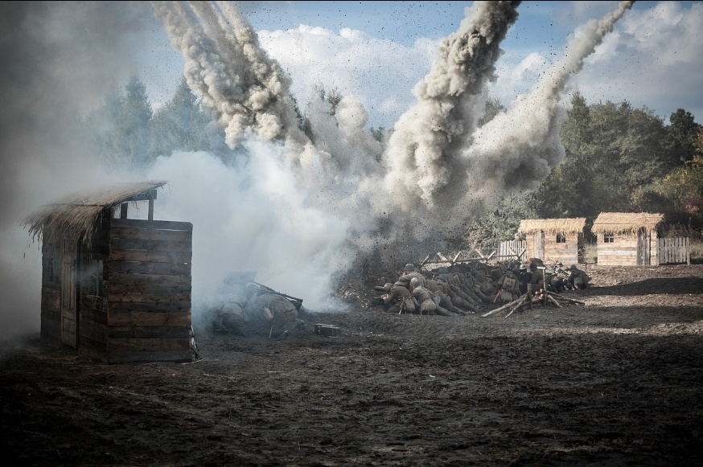
Or, d'après la bible, il y aurait de quoi estimer que du sang fut versé, ne serait-ce - qu'au moment du déluge. - et puis aussi pour les stigmates des uns ou des autres (par exemple Thérèse Neumann) ne fut-ce pas Dieu qui leur donna ces stigmates et qui fit "verser" du sang? - Et même si on considère que l'expression "verser le sang" correspondrait à ce que du sang fut versé à la suite d'une tentative de tuer, Dieu ne fit-il pas lui-même verser le sang dans le cadre d'actions de justice divine? (par exemple des guerres, comme parfois évoqué dans le livre du Ciel).
2. Le Fils, le sang, la cène, l'eucharistie "Seul Dieu peut juger parce que lui n'a jamais versé le sang de personne. Il est l'innocent qui a donné sa vie." Le Fils, au moment de la cène, n'aurait-il pas versé son sang? Et l'Eucharistie ne serait-elle aussi du Sang?
est Chair, mais elle est Sang aussi. Me voici sous l’aspect du Sang. Regarde comme il exsude et ruisselle sur mon visage défiguré, comme il coule le long de mon cou, sur ma poitrine, sur ma tunique, doublement rouge car trempée de mon Sang. Regarde comme il mouille mes mains liées et descend jusqu’aux pieds, au sol. Je suis vraiment celui qui presse le raisin dont parle le prophète, mais c’est moi que mon amour a pressé. Bien peu nombreux sont ceux qui savent évaluer le prix infini de ce Sang, que j’ai prodigué jusqu’à la dernière goutte pour l’Humanité, et jouir de ses très puissants mérites."
3. Le Fils, le sang et la crucifixion Le Fils, du temps de sa première venue sur terre n'aurait-il pas aussi versé son sang pour les péchés des hommes? Et même versé jusqu'à la dernière goutte?
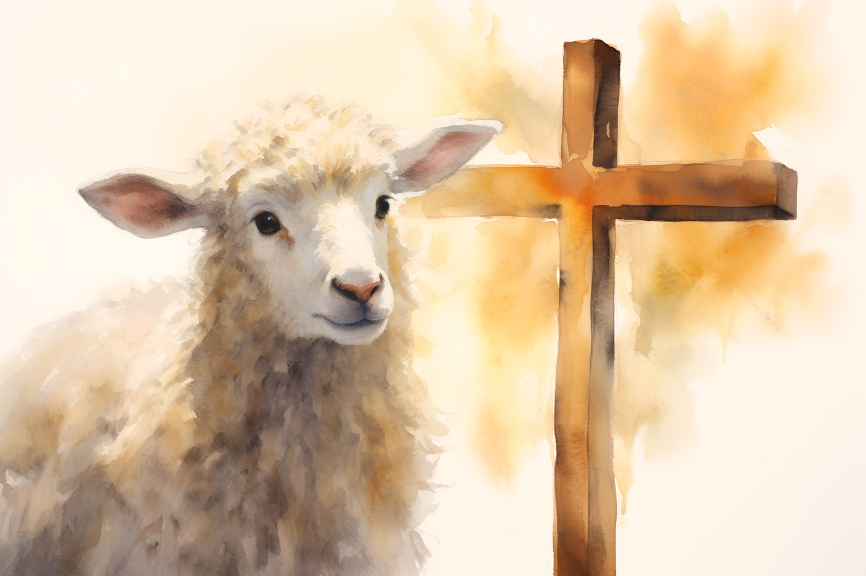
Je demande maintenant à celui qui sait le regarder et comprendre d’imiter
et d’essuyer avec son amour le visage ensanglanté de son Dieu. Je demande maintenant à celui qui m’aime de panser avec son amour les blessures que les Humains ne cessent de me faire. Je demande maintenant surtout de ne pas laisser ce Sang se perdre, de le recueillir avec une attention infinie, jusqu’à la plus petite goutte, et de le répandre sur ceux qui ne se soucient pas de mon sang.
C’est un Jésus triste, très triste, dont les larmes se mêlent au sang, un Jésus contusionné, dépeigné, sale, la tunique déchirée, les mains liées et la couronne bien enfoncée sur la tête. Je vois distinctement la couronne de grosses épines, pas longues mais serrées, qui pénètrent dans les chairs et les écorchent. Chaque cheveu a sa goutte de sang et le sang ruisselle du front sur les yeux, le long du nez, descend le long de la barbe et du cou, sur la tunique, tombe goutte à goutte sur les mains et semble plus rouge tant elles sont pâles, mouille la terre après avoir mouillé les pieds. Mais le plus triste à voir est le regard... Il demande pitié et amour, et trahit sous une mansuétude résignée, une douleur infinie.
1er septembre 1899 L'obéissance était tout pour Moi et Je veux qu'elle soit tout pour toi. C'est l'obéissance qui m'a fait naître et c'est elle qui m'a fait mourir. Les blessures que Je porte sur mon corps sont toutes des blessures et des marques que l'obéissance m'a infligées. Tu as raison de dire qu'elle est comme la plus puissante guerrière, armée de toutes sortes d'armes pour blesser. En fait, -elle ne m'a pas laissé une seule goutte de mon sang, -elle a déchiré ma chair en pièces, -elle a disloqué mes os pendant que mon pauvre Cœur, épuisé et sanglant, cherchait Quelqu'un de compatissant pour le consoler. Agissant comme le plus cruel des tyrans, l'obéissance ne fut satisfaite qu'après -m'avoir sacrifié sur la croix et -m'avoir vu rendre mon dernier souffle comme victime d'amour. Le livre du Ciel
13 novembre 1899 Ah! L’homme est trop ingrat! De tous côtés, il me contraint à le châtier. Il m'arrache lui-même les châtiments des mains. Si tu savais comme je souffre quand je déploie ma Justice. Mais c'est l'homme lui-même qui me force. Par le fait que J'ai acheté sa liberté au prix de mon Sang, il devrait m'être reconnaissant. Le livre du Ciel
4. Le Fils, le sang et le Ciel
Le Ciel tout entier chante aujourd'hui le sanctus à l'Agneau dont le sang fut versé pour la rédemption de l'Humanité.
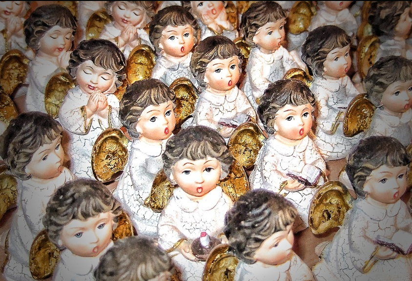
1ᵉʳ juillet, fête du précieux sang
Une version
Une autre version
"Seul Dieu peut juger. Lui n'a jamais versé le sang de personne. Il est l'innocent qui a donné sa vie."
Le Fils, au moment de son passage sur terre (il y a à peu près 2000 ans), n'a pas versé le sang par l'épée.
5. Le Père et le sang Dans la phrase "Seul Dieu peut juger parce que lui n'a jamais versé le sang de personne. Il est l'innocent qui a donné sa vie." Dieu pourrait signifier Dieu le Père. Puisque cette phrase ne précise pas Dieu le Fils ou Dieu le Père, mais Dieu tout court. Or Dieu le Père (Trinité, trois en un.) n'aurait-il jamais versé le sang? Ceci semblerait difficile à concevoir, si Dieu est tout. Et s'il est trois en 1. C'est-à-dire ce qu'aurait fait le Fils, le Père l'aurait fait aussi.
Ne pas verser le sang suffirait à juger les hommes? ''Seul Dieu peut juger parce que lui n'a jamais versé le sang de personne.''
Certains Humanoïdes n'auraient pas non plus versé le sang d'autrui et pourtant, auraient-ils de quoi être juges comme Dieu? Cette phrase "Seul Dieu peut juger parce que lui n'a jamais versé le sang de personne." serait-elle valide? Serait-ce une raison suffisante, de ne jamais avoir versé par l'épée (ou autre arme ou autrement) le sang de personne, pour être juge des Humanoïdes? Certain(e)s Humanoïdes ne versèrent pas le sang par l'épée et ils(elles) n'auraient peut-être pas à être juges non plus?
Bilan : ne vaudrait-il pas mieux rédiger : Seul Dieu peut justement juger parce que c'est Dieu. Ou même, plus simplement : Seul Dieu peut justement juger. Plutôt que "Seul Dieu peut juger parce que lui n'a jamais versé le sang de personne." ?
Françoise Breynaert, lien du site internet
Ou d'un site internet (car elle en a peut-être plusieurs) ? Je vérifierai peut-être ceci plus tard. De mémoire je crois elle participa aussi à un site sur Marie. https://www.foi-vivifiante.fr/
https://www.foi-vivifiante.fr
Jean-Marcel Gaudreault
Un des Christianisants les plus intéressants, il me sembla. Je vis diverses vidéos de lui, sur sa chaine youtube. Il me sembla avoir compris des notions fondamentales.
Quelques liens : Travaux de Jean-Marcel Gaudreault
Je dirais deux Christianisantes assez intéressantes. Comme si j'avais trouvé en elles encore une âme, quelque chose de vivant, de sain, dans une époque telle qu'actuelle, une époque malheureuse, si empreinte d'une atmosphère "démoniaque".
Marion Sigaut
Conférences ou interventions vidéos intéressantes, courageuses, qu'elle fit à propos :
Voltaire, un traitre à la Nation au service des puissants - YouTube - Marion Sigaut
Le Voltaire public, le Voltaire privé. Vers 14:40.
- de la révolution française et de son aspect anti-Chrétien - des Enfants/de la pédocriminalité - de Voltaire. (Voltaire qui me sembla relativement s'être parfois comporté comme une canaille anti-Chrétienne. Mais son "canaillisme" aurait peut-être à trouver une certaine indulgence car il fut peut-être sous possession "démoniaque": - mépris pour le peuple : - affaire Damien - comportement plus ou moins odieux avec divers Gens de son époque (XVIIIᵉ siècle) - mensonges. Mensonges réalisés en plus avec une sorte de panache.)
Il y a plusieurs années, j'avais plutôt incompris que W.A Mozart aurait refusé de le rencontrer. Mais depuis au moins quelques années, je vois les choses différemment.
Marion Sigaut - Le récentisme
Marion Sigaut me sembla aussi s'opposer au récentisme (plutôt prôné par Pierre Dortiguier). Pour ma part, je dus me demander si le récentisme fut une sorte de "lubie" académique. Ce me semblerait assez juste que l'on pourrait se demander ce qu'il s'est passé pendant quelques siècles (vers l'an 1000). (Autrement rédigé, il y aurait de quoi se le demander). Mais ce ne fut pas pour autant qu'il ne se soit rien passé. (Entre autres : Hildegarde de bingen, Thomas d'Aquin).
Me sembla essayer de faire valoir que le moyen-âge ne fut pas une époque aussi sombre que ceci fut parfois présenté.
Les Musulmanisans - quelques considérations
Préambule - Hypothèse sur ce que va devenir cette communauté musulmane
En fait, une hypothèse, c'est que cette communauté musulmane(ou vaudrait-il mieux rédiger musulmanisante, car cette communauté ne deviendrait musulmane qu'à l'apparition du Mahdi) cette communauté, j'estime, je suspecte, est la communauté par laquelle devrait commencer la délivrance finale. Beaucoup d'éléments me semblèrent converger et me laisser penser que c'est par les Musulmans, les Musulmans sous l'égide d'un Mahdi que commencera à revenir davantage Dieu sur terre. Voici divers de ces éléments:
Un monde problématique. Des Gens éclatés entre eux, à travers le monde, dans différentes communautés. Un seul Dieu qui serait la Trinité. La communauté musulmane, une communauté entre deux eaux: avec une ascendance Abrahamique (du côté du père) et une ascendance maternelle "du peuple" du côté de la mère. Cette position entre deux eaux, leurs conféreraient justement bien davantage que toutes les autres communautés, un rôle de jonction entre les nations et Dieu. Comme s'ils pouvaient faire la jonction entre les Gens plutôt issus du peuple (les Gens sans ascendance Abrahamique) et les Gens issus de lignée Abrahamique (divers Judaïsants, entre autres).
Les Musulmans - une communauté entre deux
Je dirais, les Musulmanisans, une communauté entre deux par excellence
Mi-circoncis (Circoncis, mais pas la même circoncision que les Judaïsants.) Mi-stables sexuellement, mi-instables.
Mi d'ascendance populaire
↔️
Mi d'ascendance divine (du côté du père (Abraham)).
Mi-occidental (pour les Maghrébins du moins).
↔️
Mi-oriental (pour les Maghrébins du moins).
Mi-Christianisant
↔️
Mi-Judaïsant
Parmi les Musulmanisans les plus entre deux : les Maghrébins.
Objectif de l'islam?
L'islamisme serait-il une fin en soi ou une étape vers le Christianisme premier? Vers la Trinité? Si je pars de l'hypothèse que le vrai Dieu serait le Fils, alors, je suspecte de l'islam que ce soit une religion de transition.
pour agrandir/diminuer la taille de l'image avec le scroll de la souris : shift+mousewheel ou alt+mousewheel
Divers types de Musulmans, mais ce me semblerait un des peuples "entre deux"/en exil, par excellence.
J'estime un caractère commun aux Musulmanisans serait la sensation d'abandon et/ou d'absence du père. Peut-être ceci expliquerait pourquoi les Musulmanisans, en général, me semblèrent avoir eut une certaine rigueur et une certaine attention pour le comportement d'autrui (par exemple Salim Laïbi). Une exigence qu'ils auraient pour la société. Comme si pour eux, la société devait se substituer à un père absent. Cette rigueur viendrait aussi d'une origine divine : Abraham/Ismaël. (Mais pas forcément pour tous les Musulmanisans, car tous ne descendraient pas d'Ismaël.) Cette sensation d'absence du père, dans une telle époque, j'estime, ceci concernerait peut-être bien au moins des centaines de millions de Créatures sur terre. Au moins des centaines de millions à être portées vers l'islam.
Je dus suspecter que ceci fut issu de leur origine:
Pour les Ismaéliens : d'un côté leur mère, servante et peut-être tout de même pas véritable femme d'Abraham (sa véritable femme aurait plutôt été Sarah?). Et d'un autre côté, leur père, Abraham. Les ismaélites qui auraient ainsi une double origine: à la fois sacrée du côté du père, et d'un autre côté, "populaire", du côté de la mère. Un peuple qui aurait comme atavisme collectif une sensation d'abandon paternel intrinsèque. (Lié à la séparation d'Avraham et l'exil d'Agar (mère d'Ismaël)). Les Musulmans descendants d'Ismaël auraient ainsi cette bipolarité, cette sensation d'abandon. Un complexe de rejet, ou si ce n'est un complexe de rejet, du moins, un complexe de manque. Je verrais 4 types de Musulmanisans :
Au moins 4 types de Musulmanisans ou, si ce n'est Musulmanisan, du moins des Créatures attirées par le Musulmanisme
Créature croyant au coran, au prophète de l'islam. Ou du moins qui se sentit attirée par cette religion ou les Gens qui en composaient sa communauté.
Créature croyant au coran, au prophète de l'islam. Ou du moins qui se sentit attirée par cette religion ou les Gens qui en composaient sa communauté.
Créature croyant au coran, au prophète de l'islam. Ou du moins qui se sentit attirée par cette religion ou les Gens qui en composaient sa communauté.
Créature croyant au coran, au prophète de l'islam. Ou du moins qui se sentit attirée par cette religion ou les Gens qui en composaient sa communauté.
D'ascendance seulement Ismaélienne (Ismaël, fils d'Abraham (vers -3500 av JC?))
D'ascendance Mahométane (Mohammed, vers 700) et non Ismaélienne
D'ascendance Ismaélienne et Mahométane
Ni d'Ascendance Ismaélienne et ni Mahométane
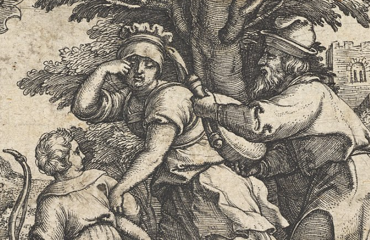
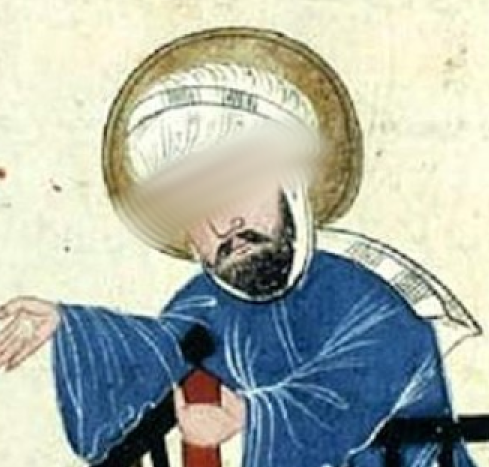
La Créature aurait cet atavisme "d'abandon" du père (Abraham).
La Créature aurait cet atavisme de Muhammad, cet atavisme d'une sensation d'un manque d'avoir eut un père.
"Abandon" du père Abraham et sensation d'absence de père (Muhammad)
Diverses Créatures qui n'auraient pas vraiment eut de père seraient-elles plus volontiers portées (de cœur, du moins), vers l'Islam? : Enfants orphelins, Enfants issus de familles monoparentales. Enfants qui auraient été maltraités par leur père. Enfants issus de familles nombreuses sans vraiment eut de père présent.
Une partie des Ismaélites ne seraient pas Musulmanisans (c'est-à-dire seraient non adeptes du prophète Muhammad)? La question serait de savoir si Muhammad était lui-même Ismaélite d'origine.
Mais toute une partie de la psyché Ismaélite (sensation d'abandon du père) pourrait se retrouver, au moins en partie, chez beaucoup de Créatures nées en afrique, en ce que beaucoup de Créatures africaines (dont les Enfants africains) seraient issues de familles nombreuses et auraient de quoi se sentir comme abandonnées/délaissées par le père, au milieu de fratries importantes en nombre, la polygamie étant aussi fréquente en afrique, or avec Agar, Avraham aurait été aussi ponctuellement dans une polygamie.
Pour les Mahométans : la sensation de ne jamais avoir eut de père.
Pour les Créatures n'ayant eu comme ascendants ni Ismaël, ni Abraham, certaines seraient portées vers l'islam. Par exemple les Enfants nés dans des familles nombreuses, les Enfants orphelins, abandonnés par leur père.
Car une question, sans arrière-pensée particulière de ma part, pourrait se poser tout de même pour les Musulmans/magrébins du moins de france: que font-ils en france ou dans des pays appliquant moins diverses règles musulmanes que la france Alors qu'il n'y a plus tout à fait la guerre maintenant au maghreb ou en arabie. Une hypothèse serait qu'ils chercheraient symboliquement un père, le retour, ou plutôt une réconciliation avec Avraham, en quelque sorte. Ou, un père qu'ils n'auraient jamais eu, comme ceci aurait été le cas pour Muhammad (quoique Muhammad aurait eut un père jusqu'à un certain âge, mais ce père serait décédé alors que Muhammad était très jeune). Et tant que les Musulmanisans n'auraient pas retrouvé ce père, une partie d'entre eux seraient éparpillés à travers le monde, inconsciemment (ou consciemment) à la ?recherche? de ce père? Ce père qui sera/serait le futur Mahdi? Un dirigeant qui un jour, calmement, par amour plutôt que par force, leur fera retrouver une grandeur et peut-être aussi une patrie. Les amènera au maghreb et/ou en arabie? En particulier le rôle des Musulmanisans expatriés serait de trouver ce Mahdi?
Une réponse à la question que font-ils en terre étrangère: c'est-à-dire ni sur les terres du prophète (arabie saoudite), ni en pays Musulmanisan, serait donc qu'ils chercheraient symboliquement ce père/Père. Et tant qu'ils ne l'auraient pas retrouvé, ceci ne pourrait profondément pas aller, pour eux. Et ceci pourrait en faire un des peuples les plus intéressants, pour la délivrance finale.
Pourrait-on même déduire l'origine, l'ascendance de divers Musulmanisans (par exemple Salim Laïbi ou Maamar Metmati) en fonction de s'ils attendraient ou non le Mahdi? En fonction de s'ils porteraient une attention ou non au Mahdi.
Origine des Musulmanisans en fonction de leur attirance au Mahdi. Hypothèse.
Musulmanisan qui attend le Mahdi ou du moins qui s'y intéressa
Musulmanisan qui n'attend pas spécialement le Mahdi, qui n'en parla quasiment jamais
Genre Nader Abou Anas ou autres conférenciers qui parlèrent du Mahdi
Par exemple Salim Laïbi ou Maamar Metmati (que j'entendis rarement sur le Mahdi)
Plutôt d'origine seulement Mahométane? Ils n'auraient pas d'origine Ismaélienne? Avec ce choc émotionnel Ismaël/Abraham.
D'origine Ismaélienne? Porteraient encore en eux ce choc émotionnel, cette espèce d'épine dans le cœur par rapport au Père, par rapport à Abraham? Et auraient encore comme un froid instinctif envers le Père.
Musulmanisans. Relation à la mère et immaturité
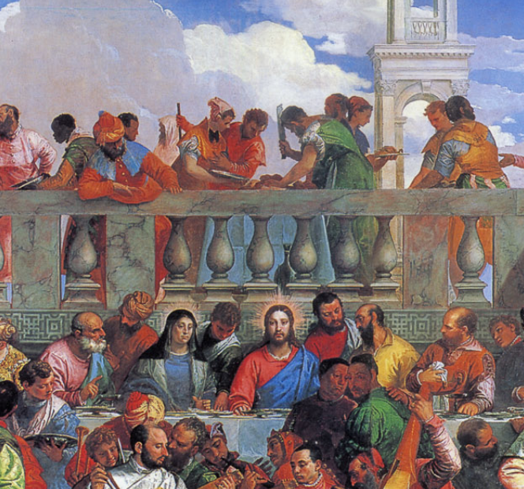
En lien avec ce rapport au père (Abraham et/ou Mahomet et/ou des pères relativement absents), beaucoup auraient un fort lien à leur mère. J'ai moi-même constaté, et je ne dus pas être le seul à le ressentir, que divers Maghrébins étaient très sensibles par rapport à leur mère. De part leur histoire (que ce fut avec Agar et/ou pour ceux en lien avec Mohamed et/ou ceux un père absent), beaucoup de Musulmanisans seraient très attachés à leur mère et moins en mesure que la moyenne, d'avoir une certaine maturité, à ce niveau là.
Si je considère que Dieu serait le Fils, alors à partir d'un certain âge, il faudrait savoir prendre ses distances, par rapport à sa mère. Le Fils, aux noces de Cana, se serait assez nettement séparé de sa mère. Il faudrait ainsi ne pas trop rester materné.
pour agrandir/diminuer la taille de l'image avec le scroll de la souris : shift+mousewheel ou alt+mousewheel
Possessivité de la mère Musulmannisante : dans cette époque, utile quand l'enfant est assez jeune, mais, plus âgé, en partie du moins, à la longue, cette relation mère-Enfant, une impasse incapacitante?, pour l'Enfant Musulmanisan(e)? Car la mère du Musulmanisan se substituerait trop à Dieu?
Ma suspicion : une seule solution à cette situation de possessivité excessive/ souvent étouffante/malsaine/immaturisante : comme pour d'autres impasses, si ce n'est toutes les impasses : Dieu. Et dans l'hypothèse où Dieu serait la Trinité, alors la seule solution serait d'aller vers la Trinité.. S'émanciper : Émancipation qui sera peut-être réalisée lors de la venue du Mahdi, une nouvelle Trinitisation ("croisade"), ou sinon la venue du Mahdi, la venue du Fils.
D'ailleurs, de cet attachement à la mère, il y aurait de quoi déduire tout un tas de comportements de divers Musulmanisans par rapport aux Filles. J'ai moi-même ressenti que les Musulmanisans se comportaient assez différemment par rapport aux Filles, par rapport à pas mal d'occidentaux. (Par exemple, chez eux, l'expression "n***e ta mère" me sembla "tout un truc").
J'ai estimé que beaucoup furent immatures. Cette manière qu'eurent beaucoup de rejeter dans les relations amicales tel ou tel Garçon, pour privilégier telle ou telle Fille, ceci me semblerait plutôt malsain/immature, plutôt que de Dieu.
J'ai suspecté que toute une partie de la psyché de beaucoup de Musulmanisans, venait de cette relation à la mère :
À la fois ils auraient un problème d'affectivité, par atavisme de cet abandon du père, et ils seraient proches de leur mère. - Mais cet attachement à la mère les confinerait dans une sorte d'impasse Et finalement, ils souffriraient et passeraient une grande partie de leur temps à se plaindre Par exemple Salim Laïbi ou Stéphane Edouard. Sorte de comportement assez contradictoire dans lequel ils me semblèrent comme automatiquement se placer dans des problèmes et ensuite se plaindre.
Comme s'ils reproduisaient sociétalement leur impasse maternelle.
Ne faudrait-il donc un jour un Mahdi et/ou un Machia'h et/ou un grand Monarque et/ou le Fils, pour les sortir de cette impasse/immaturité? Pas sûr qu'ils puissent y arriver seuls.
Les Maghrébins
Les Marocains, les Algériens, les Tunisiens et plus ou moins les Lybiens.
À réfléchir à l'occident et à l'orient, j'ai pour le moins suspecté que les Maghrébins furent (et soient encore) mi-occidentaux mi-orientaux.
Musulmanisans, royaume du Père et délivrance finale
Dans l'état actuel de misère du monde, j'estime, les Musulmanisans seraient ainsi la communauté, pour commencer, la plus intéressante pour aller vers la délivrance finale. Une communauté plus proche de Dieu que bien d'autres. Un des problèmes majeurs sur terre serait que Dieu n'y réside pas (ou bien trop peu) et ce peuple, ayant en lui l'absence du père/Père, je pourrais considérer qu'ils portent en eux, particulièrement, à leur manière, cette absence du Père. À se demander si une délivrance finale du monde (le retour du Père, le retour de Dieu, le rayonnement du troisième fiat) commencera par eux et par le règne du Mahdi. Mahdi qui devrait veiller au retour du Père sur terre.
Une perspective pour les Musulmanisans : Le Mahdi🆕
Le Mahdi et la divine volonté.
Mahdi = Machia'h = grand Monarque, ou des êtres distincts?
Playlist vidéos Mahdi
Playlist vidéo Mahdi :
Quelques caractéristiques du Mahdi
Descendant de Mohammed.
Son nom : Mahomet (en arabeمُحَمَّدُ, retranscrit en Muḥammad), également dit Muhammad ou Mohammed. (Il se traduit par qui "comblé d'éloge" ou "digne de louanges"). D'après certains, de la lignée de Fatima. Personnellement, je doute que que son prénom de base soit forcément Mohammed, mais probablement prendra-t-il ce prénom/surnom pendant un temps? Par exemple, son prénom de base pourrait-il être "Gilbert"?
Les Chiites l'attendent comme le 12ème imam. (Reportage "en attendant l'imam caché", dans la playlist vidéo précédente)
Devrait comme "refuser" d'être le Mahdi pendant un temps. (Ou du moins donnera t il cette impression.)
Quelqu'un qui devrait être amené à la mecque, et repousser une attaque venue de l'est.
Le Fils devrait "descendre" et devrait inciter le Mahdi à diriger le peuple.
Caractéristiques physiques : Front large, Nez aquilin
Devrait être "rectifié" en une nuit.
Depuis l'est, tentative d'invasion de la mecque
Une invocation collective lors de la tentative d'invasion de la mecque par l'est?
Au niveau de la tentative d'invasion de la mecque, quand le Mahdi devrait être à la mecque, devrait-il y avoir une invocation collective? Invocation collective qui fonctionnerait, selon aussi ce que dit dit Jean-Marcel Gaudreault ~à 7:55 sur la vidéo.
Tentative d'invasion de la mecque - D'où devrait venir cette tentative d'invasion?
D'une armée formée par le qatar? et/ou les émirats arabes unis et/ou une partie de l'arabie saoudite (riyad)?
"si, aux moments tragiques où un massacre vous menace, les invocations égalaient en nombre les imprécations — note que je ne parle pas d’un nombre supérieur, mais égal —, tous les pièges et les volontés des démons et des hommes-démons seraient détruits et tomberaient sans vous faire plus de mal, comme un vautour dont les ailes sont brisées et qui ne peut plus attraper de proie." Maria Valtorta, les cahiers de 1944, 9 janvier
Ressemblance entre une partie de l'histoire de Ste Geneviève et une tentative invasion de la mecque à venir
Une situation d'invasion de la mecque qui pourrait trouver quelques ressemblances avec l'histoire de
Selon la tradition, lors du siège de Paris en 451, grâce à sa force de caractère, Geneviève, qui n’a que 28 ans, convainc les habitants de Paris de ne pas abandonner leur cité aux Huns. Elle encourage les Parisiens à résister à l’invasion par les paroles célèbres : « Que les hommes fuient, s’ils veulent, s’ils ne sont plus capables de se battre. Nous les femmes, nous prierons Dieu tant et tant qu’Il entendra nos supplications. » De fait, Attila évita Lutèce (Paris). Extrait wikipedia au 8 juin 2023
Judaïsme. Considérations. Quelques Judaïsants
Considérations générales sur les Judaïsants
J'emploierais le mot Judaïsants, ou le mot "Juifs" plutôt que le mot Juifs sans guillemets. Ne serait-ce puisque j'estime que divers "Juifs" actuels sont dans des déviances et que la communauté "juive" me sembla infiltrée. Seulement lors de la délivrance finale, de la venue du Machia'h, ils me sembleraient pouvoir reprendre le qualificatif de Juifs sans guillemets. Depuis des décennies en particulier, beaucoup d'entre eux, que ce fut parce-qu'ils ne le pouvaient, ou ne le voulaient pas, ne remplirent pas leur rôle de guide des nations et pour ceci aussi, ils ne mériteraient pas le titre de juifs, de véritables juifs de Moïse, juifs d'Abraham et autres grandes figures du judaïsme. Tout autant que s'il existe actuellement sur terre un futur Machia'h, en quoi aurait-il de quoi porter ce titre, en l'état actuel du monde?
Judaïsants et circoncision : quelle empathie pour les Incirconcis et les problèmes du monde?
Hypothèse : entre autre, la circoncision, pour la plupart des Judaïsants: d'un côté les rendit plus stables, mais d'un autre les empêcha/empêche d'avoir une certaine charité, compréhension pour les non-circoncis/les nations. Il y aurait donc une impasse. Le seul lien entre les nations et les "Juifs" serait le futur Machia'h.
Circoncision, stabilité sexuelle et Machia'h
Est-ce que la circoncision favorise/a favorisé la chasteté/un certain équilibre mental/sexuel/sociétal? Une partie du corps du Garçon étant moins protégée par de la peau, alors cette partie frotterait davantage sur du tissu et/ou serait plus à l'air libre, et deviendrait ainsi davantage désensibilisée, moins à même d'exciter le Garçon? L'intelligence, la mémoire, seraient liées à la stabilité des passions sexuelles aussi (du moins d'après le livre du Ciel (Jésus/Luisa Piccarreta)). Historiquement, aurait-ce été pour les stabiliser sexuellement/comportementalement, que Dieu aurait amené les Judaïsants à se circoncire? : Pour les préparer, en tant que peuple? La circoncision, en partie du moins, expliquerait-elle, pourquoi certains "Juifs" auraient une sorte de stabilité sexuelle/comportementale et un certain pouvoir intellectuel, globalement une position d'intellectuel, depuis des siècles, comparé à des non-circoncis?
Quoiqu'il en fut et en soit, je ne prônerais pas pour autant la circoncision. Je ne vois pas en quoi parce-que Dieu aurait demandé de se circoncire à un certain moment de l'histoire, que ceci serait encore maintenant demandé. Mais enfin ceci dépend de qui on prendrait pour Dieu... Si Dieu est la Trinité, la circoncision n'alla t'elle pas "à l'encontre" de Dieu, depuis environ 2000 ans? De ce que j'ai compris, le Fils évoqua avoir souffert, de par sa circoncision, et ne demanda pas son renouvellement, pour les générations après lui (j'estime parce qu'il avait prit sur lui cette circoncision, et que le travail fut fait par lui.) :
Livre du Ciel – Tome 20 Le Fils à Luisa Piccarreta Tout petit, je me suis soumis à la cruelle blessure de la circoncision – qui m’a fait pleurer des larmes amères – non seulement à moi, mais à ma Maman et à mon cher saint Joseph. C’était la coupure que je voulais donner à la volonté Humaine, afin d’y faire couler la Divine Volonté
Mon hypothèse, voire ma sensation, c'est que dans un monde sous aura "démoniaque"? tel que le monde actuel, les Judaïsants circoncis seraient, et furent sexuellement nettement plus stables que la moyenne parce-que, entre autre, circoncis. Comme si par la circoncision, ils étaient davantage arrivés que la moyenne à s'en sortir d'une société en partie malsaine/"démoniaque" (dont l'actuel milieu scolaire mixte et les systèmes professionnels mixtes actuels). Cette circoncision leur aurait permit un certain détachement/équilibre? Les "Juifs" auraient une capacité à encaisser l'actuel monde "démoniaque" et pour beaucoup, se soucieraient en général peu de changer les règles de ce monde dans lequel ils tiendraient parmi les premières places. Et parmi les pires "Juifs", certains même auraient veillé à maintenir les "Goys" dans le péché ou parfois même à les y enfoncer? Certaines dirent parfois que des "Juifs" étaient à la tête de la p*rn*graphie, dans le monde. Alors ceci serait-il vrai? Si tel est le cas, ceci irait-il de pair aussi avec la circoncision? D'un côté cette circoncision leur aurait donnée une force dans un tel monde, mais d'un autre, ils auraient aussi plutôt été incapables d'avoir une certaine compréhension/charité pour les Incirconcis? Une partie des Judaïsants aurait eut tendance, à l'image des explorateurs de la bible, à pour le moins ne pas être trop pressés, de voir le monde ne plus être à ce point sous "aura démoniaque", puisque dans un tel monde, ils garderaient encore une place relativement élevée? Ce qui pourrait rendre beaucoup de "Juifs"/Judaïsants aux yeux de beaucoup d'Incirconcis assez insupportables, arrogants, car les "Juifs" auraient une force d'âme, mais aussi une incapacité, une léthargie à comprendre les non-Judaïsants et à les aider. Ce qui serait une force plutôt hautaine que généreuse/bienveillante. Je pourrais me demander si souvent, face au "goy" malade, pour un Judaïsant, il se passa ceci : Un "g*y" avait en lui des pulsions sexuelles assez fortes, une libido déséquilibrée pour telles ou telles Filles -(Ce qui j'estime arriva, chez le "goy" agnostique, en occident "démoniaque" actuel, assez couramment, passé la puberté, --Un occident plus ou moins "démoniaque" dans lequel il est accordé toute une prévalence dangereuse au corps (corps plus ou moins dévêtus, publicités etc.))--. Imaginons aussi que ce "g*y", à force de prendre du plaisir charnel ici et là, en devienne plus ou moins malade : malade d'une existence dissolue, malade de ruptures, malade de problèmes amoureux, de divorces. (Ce qui, j'estime, fut et doit encore être actuellement le cas pour beaucoup de Créatures, en occident du moins). Eh bien, j'aurais pour le moins de quoi me demander si souvent, beaucoup de "Juifs" auraient réagit et réagiraient encore, en général s'en seraient fichés, et encore actuellement, ils s'en ficheraient de tous ces "goys", ne serait-ce que parce qu'ils ne purent et ils ne peuvent toujours pas ressentir l'intensité de ces pulsions sexuelles de non-circoncis. Pour beaucoup d'entre-eux ils ne seraient pas à même de comprendre dans leur chair, mais aussi dans leur âme, qu'est-ce que ceci pourrait faire d'avoir ces déséquilibres sexuels de "goy"/d'Incirconcis?
Il y aurait donc eut et il y aurait encore un problème avec les actuels "Juifs": Car leur rôle serait de s'occuper des maladies du monde, à la tête des 70 nations, mais globalement, pour la plupart, ils ne le feraient actuellement pas. Au cours des dernières années divers Judaïsants me semblèrent tout de même être "descendus" vers les "Goyims" agnostiques: il me sembla que ce fut le cas, du moins, pour les Judaïsants qui donnaient des cours vidéos sur internet (genre Haïm Dynovisz ou d'autres). Mais ces Judaïsants constituent une minorité parmi les "Juifs"/Judaïsants.
Une hypothèse que j'aurais, donc, c'est que le Machia'h (si tant est qu'un Machia'h vienne un our), il ne sera pas circoncis. Ainsi il pourra avoir ressenti dans sa chair, dans son âme, ce que ceci ferait d'être incirconcis? Et faire la jonction "Juifs"/"g*yims"? Il aura put ressentir en lui-même la psyche circoncise/"g*y"?
Pourrait-il y avoir encore davantage de dépassement de soi à arriver pour un Garçon à se stabiliser sexuellement alors qu'il ne serait pas circoncis (par rapport à un circoncis)?
La plupart des Judaïsants ne me semblèrent pas "descendre" vers les non-Judaïsants, ne partagent pas avec eux. Mais à juste titre, d'ailleurs, j'estime, parfois. Pourrais-je tout à fait leur en vouloir de ne pas "descendre" vers certains non-Judaïsants? Il en va peut-être aussi de leur survie, qu'ils ne "descendent" pas trop vers certains non-Judaïsants agnostiques.
La seule solution à envisager pour eux, serait la délivrance finale et le Mashia'h.
Communauté qui semble trop "haute" ou plutôt hautaine?, pour que commence chez eux la délivrance finale?
D'où probablement y aura-t-il une communauté entre les agnostiques et les croyants : les Musulmans, puis ensuite le Mashia'h pourra apparaître chez les Judaïsants : Mahdi puis Mashia'h, puis apparition glorieuse du Fils? Le Fils n'est pas reconnu actuellement chez les Judaïsants, mais fut-ce parce qu'il en aurait lui-même voulu ansi?
Avant la survenue du véritable Mashia'h, l'antiChrist devrait-il même apparaître en israël et se faire passer pour le Mashia'h?
Le Machia'h du peuple?
Ce qui pourrait donner du crédit à la thèse qu'en partie au moins, le Machia'h viendra du peuple, car s'il était simplement d'origine juive on pourrait imaginer qu'il ne pourrait pas faire la jonction Judaïsants-"goyims".
pour agrandir/diminuer la taille de l'image avec le scroll de la souris : shift+mousewheel ou alt+mousewheel
Relation à la gente féminine chez certains Judaïsants
Depuis des années, il dut me sembler pour le moins interpellant de voir comment d'un côté divers Judaïsants pouvaient avoir tout un respect pour les Filles, (ne serait-ce que parce-que la judaïté est transmise par elles, et assez souvent aussi, Haïm Dynovisz fit un éloge des épouses, des Filles.) et comment d'un autre côté, ils avaient put mettre à ce point de côté Marie (mère du Christ),
Luisa Piccarreta et de nombreuses autres grandes figures féminines du catholicisme (par exemple Catherine de sienne, Hildegarde de bingen, Thérèse d'Avila). Qu'est-ce que ce fut que ceci? Comment mettre à ce point de côté ces grandes figures de l'Église?
Un extrait du livre du Ciel - Relation entre jérusalem et rome
3 octobre 1928 - tome 24 - Échange entre Jérusalem et Rome. "Mon pauvre esprit pensait à bien des choses concernant la Divine Volonté, particulièrement -à la manière dont viendrait son Royaume, -comment il se répandrait… et beaucoup d’autres choses qu’il n’est pas nécessaire d’écrire. Mon bien-aimé Jésus, se manifesta en moi et Il me dit : "Ma Fille, si Rome a la primauté de mon Église, elle le doit à Jérusalem Parce que le commencement de la Rédemption était précisément à Jérusalem C’est de cette patrie, dans la petite ville de Nazareth, que j’ai choisi ma Vierge Mère. Je suis moi-même né dans la petite ville de Bethléem. Mes Apôtres étaient tous de ce pays. Même si Jérusalem, avec ingratitude, n’a pas voulu me reconnaître et a rejeté le bien de la Rédemption, on ne peut nier que l’origine, le commencement, le premier peuple qui en reçut le bien venait de cette ville. Les premiers annonceurs de l’Évangile, ceux qui établirent le catholicisme à Rome, étaient mes Apôtres, tous de Jérusalem – c'est-à-dire de cette patrie. Il y aura maintenant un échange. Jérusalem a donné à Rome la vie de la religion et par conséquent de la Rédemption Rome donnera à Jérusalem le Royaume de la Divine Volonté. Cela est si vrai que tout comme j’ai choisi une Vierge de la petite ville de Nazareth pour la Rédemption, j’ai choisi une autre vierge dans une petite ville d’Italie appartenant à Rome, et à qui a été confiée la mission du Royaume du divin Fiat. Tout doit être connu à Rome comme ma venue sur terre devait être connue à Jérusalem, Rome aura le grand honneur de s’acquitter envers Jérusalem pour le grand bien qu’elle en a reçu, qui est la Rédemption. Rome lui fera connaître le Royaume de ma Volonté. Jérusalem se repentira alors de son ingratitude. Elle embrassera la vie de la religion qu’elle a donnée à Rome. Reconnaissante, elle recevra de Rome la Vie, le grand don du Royaume de ma Divine Volonté. Non seulement Jérusalem, mais toutes les autres nations recevront de Rome -le grand don du Royaume de mon Fiat, -ses premiers annonceurs, -son Évangile – tout rempli de paix, de bonheur et de restauration de la création de l’homme. Mes manifestations n’apporteront pas seulement la sainteté, la joie, la paix et le bonheur. La Création tout entière, rivalisant avec eux, libérera de chaque chose créée tout le bien qu’elle contient et le déversera sur les Créatures."
Vidéos judaïsme
Une playlist Arnaud Dumouch - Judaïsants
Rav Kadouri et le Machia'h
Si tant est que vienne un Machia'h et/ou le Fils, le Machia'h sera t'il aussi le Fils? Pour le moment, ceci dépendrait selon qui.
Avraham Ifrah
Quelqu'un dont j'ai vu plusieurs vidéos, en particulier il y a quelques années, (à compter du mardi 26 novembre 2024). Je me demande si pour les ravs francophones, au cours des dernières années, disons au cours du XXIème siècle, si Avraham Ifrah fut un des plus grands représentants de rabbi Nahman de breslev. Un des plus grands représentant, ce serait assez évident, quantitativement, au niveau de la quantité de vidéos qu'Avraham Ifrah produisit concernant Nahman de breslev, mais peut-être bien aussi un des plus grands représentants de Nahman de breslev quant à la la concordance entre les écrits de Nahman de breslev et la mentalité d'Avraham Ifrah.
Haïm Dynovisz
Quelqu'un, du moins pour moi, qui me sembla assez intéressant, assez ouvert aux autres. Quelqu'un d'assez prolifique aussi, avec des centaines de vidéos qu'il publia, et gratuites, au cours des dernières années (années précédants le vendredi 6 décembre 2024). Un des rares (ils sont peut-être, j'estime, sur terre, seulement au maximum 10% à avoir compris, ou du moins s'être intéréssé) à divers événements eschatologiques. Événements qui concerneront peut-être pourtant au moins 90% (si ce n'est 100%) de la population mondiale d'ici, qui sait? seulement quelques années (voire quelques mois ou semaines?). Un exemple qui laisserait penser que quand Quelqu'un s'intéresse à Dieu, il serait plutôt sur une bonne voie, une voie qui lui permettrait de comprendre le monde.
Haïm Dynovisz me sembla avoir comme disparu de son site internet, depuis quelques mois (à compter du vendredi 6 décembre 2024). Plus d'apparition avec Fabien Ababou ou de vidéo plus individuelles de la part d'Haïm Dynovisz. Je vis qu'il fit dernièrement quelques vidéos avec Elyahou Boccara. De mémoire, il n'y eut pas une disparition si prolongée depuis des années.
Haïm Dynovisz - Quelques considérations
Haïm Dynovisz - Le serpent de la génèse : un vrai serpent?
"C'est un code bien sûr, ce n'est pas un serpent"
Des fois, Haïm Dynovisz évoqua qu'"évidemment", ce ne fut pas un vrai serpent. Ce dut me sembler assez convaincu comme positionnement.
Si ce n'aurait pas été un vrai serpent, ceci aurait été quelque chose qui, en partie, aurait ressemblé à un serpent.
Parmi tous les animaux, il s'en trouvait un qui s'attacha plus que tous les autres à Eve. C'était une bête extrêmement familière, enjôleuse et docile. Je n'en connais aucune à quoi je puisse la comparer. Cette bête était en effet toute lisse et mince, comme si elle n'avait pas d'os. ses pattes de derrière étaient courtes et elle marchait debout. [...] Sa queue pointue traînait sur le sol. et elle avait de petites pattes courtes. très haut. près de la tête. Sa tête était ronde et exprimait une ruse remarquable : cette bête avait une langue fine toujours en mouvement. La couleur de son ventre, de sa poitrine et de sa gorge était à peu près blanc jaunâtre. et tout son dos était tacheté de brun, presque comme une anguille. Cette bête avait environ la taille d'un enfant de dix ans. Elle tournait toujours autour d'Eve. Si docile et folâtre, si agile et si curieuse de tout et de rien qu'Eve éprouvait beaucoup de plaisir en sa compagnie. Mais pour moi cette bête avait je ne sais quoi d'effrayant. et je la vois toujours aussi distinctement. source :
Aurait ressemblé, en partie, à un pingouin : queue pointue, ventre, poitrine et gorge blanc jaunâtre
une langue fine toujours en mouvement
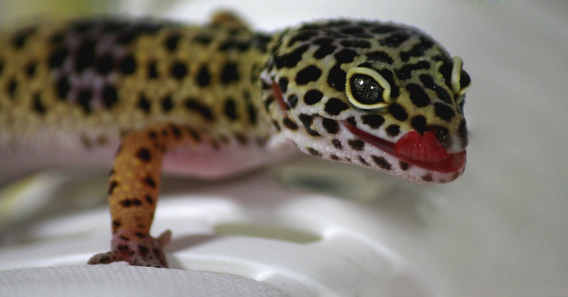
Et/ou à un dinosaure, genre vélociraptor, quoique semble pas des plus mince (mais le vélociraptor serait davantage de la hauteur d'un Enfant de 10 ans q'un pingouin. Quoique dépend des vélociraptors.)
Un des animaux qui me sembla ressembler à ce "serpent" du livre de la génèse, selon Catherine Emmerich, si ce n'est pour sa taille : l'axolotl. Attention, pour Maria Valtorta, de mémoire, ce serait un "monstre" vraiment effrayant.
Un animal assez spécial: "Une autre des particularités qui ont fait la célébrité de l'axolotl est sa capacité à régénérer des greffes endommagés ou détruits. L'axolotl est non seulement capable de reconstituer par exemple un
. Sa tolérance aux greffes est également exceptionnelle." Axolotl — Wikipédia
Axolotl plutôt blanc ici (alors que dans la vision d'Anne-Catherine Emmerich le dos est tacheté de brun), mais j'en vis des bruns aussi (mais y en avait pas sur pixabay) Vision bien gentille du serpent de la génése.
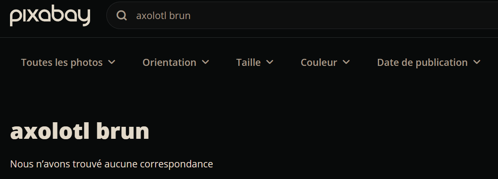
Maria Valtorta / une vision de ''la bête''
Vers 2:10, dans la vidéo normalement ci-contre: ça fait depuis le soir du 18 que Jés*s me fait voir une horrible bête. Mais si horrible qu'elle me fait horreur et me donne envie de hurler son nom est bien connu et le bon Jés*s me fait comprendre que son aspect reste inférieur à la réalité car aucune réalité humaine ne peut arriver à représenter avec exactitude la suprême beauté et la suprême laideur.
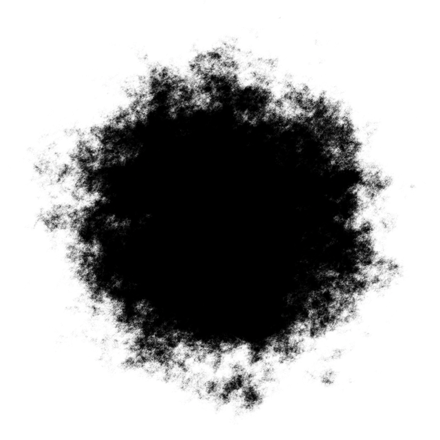
Maintenant je vais vous décrire l'affreuse bête. Il me semble voir, un grand trou noir et très profond. Je comprends qu'il est très profond mais je n'en vois que l'orifice que remplit entièrement un monstre horrible. Ce n'est pas un serpent ni un crocodile ni un dragon ni une chauve souris mais il a quelque chose de tous les quatre une tête longue et pointue sans oreilles et avec deux yeux sournois et féroce toujours à la chasse de croix une bouche très vaste et armés de dents bien aigus toujours occupées à attraper au vol quelques imprudents qui arrive à la portée de ses mandibules. Bref la tête tient beaucoup du serpent pour la forme et du crocodile pour les dents.
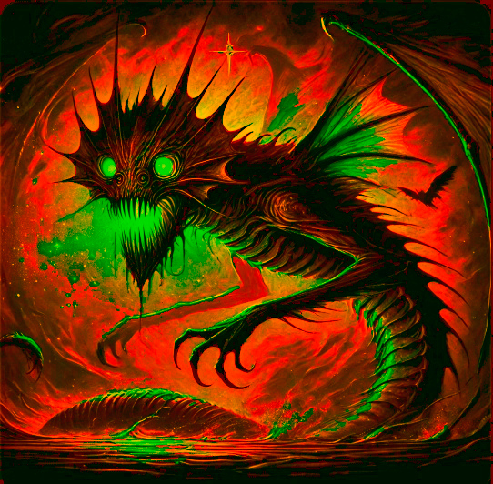
Elle déteste la lumière et elle s'appelait Lucifer. Image tchatgpt générée (le jeudi 21 novembre 2024) par rapport à quasiment tout le texte de la dictée de Maria Valtorta (pas le début du texte) "si c'est une pâle représentation de satan que doit-il bien-être"..
Un cou long et flexible qui donne beaucoup d'agilité à la tête effrayante un affreux corps visqueux recouvert d'une peau comme celle des anguilles pour donner une idée c'est à dire sans écailles d'une couleur entre le rouille, le violet et le gris foncé. Je ne saurais. Il a même la couleur des sangsues à la hauteur des épaules et des hanches jeudi hanche parce que c'est là que fini le ventre palpitant et gonflé de proies et que commence la longue queue qui se termine en pointe quatre pattes courtes et palmer comme celle du crocodile. Aux épaules deux ailes de chauve-souris la bête ne remue pas son grand corps dégoûtant elle ne remue que la queue qui s'agitent en forme de s et l'horrible tête aux yeux fascinateurs et aux mâchoires exterminatrices. Miséricorde divine quelle bête affreuse de son antre noir elle dégage ténèbres et horreur je vous assure que hier où je la voyais dans tout ça vive précision et je ne comprenais pas ce qu'elle faisait là. J'avais envie de hurler de dégoût heureusement que je voyais qu'elle ne regardait pas dans ma direction comme par répulsion répulsion mutuelle plus tôt si c'est une pâle représentation de satan que doit-il bien-être c'est assez pour en mourir deux fois d'affilée. Heureusement aussi que si la bête se tenait dans un coin mont jésus blanc beau blond était tout près tout près. Lumière dans la lumière. En comparant la lumineuse et réconfortante personne du christ avec la forme de l'autre son regard si doux clair avec le regard oblique de l'autre il y a vraiment de quoi à plaindre des infortunés pêcheurs destiné au second parce qu'ils ont repoussé Jés*s et bien maintenant que je l' ai vu je voudrais ne plus la voir parce qu'elle est trop affreuse. Je vais prier pour que le moins possible de malheureux finissent dans ses griffes mais je prie le bon dieu de m'enlever cette vision. aujourd'hui elle est moins vive et j'en suis très reconnaissante au Seigneur est encore plus reconnaissante parce que la chère voix me fait comprendre le pourquoi de cette vision qui hier me terrorisait car je croyais qu'elle m'était destinée en guise d'avertissement.
Haïm Dynovisz - Des Créatures qui ne descendraient pas d'Adam et Ève?
De ce que je compris, pendant au moins un temps, Haïm Dynovisz évoqua que certains Humains ne descendraient pas d'Adam et d'Ève. (Aurait-il changé d'avis depuis? Je ne sais pas trop. Depuis quelques mois, à compter du mardi 26 novembre 2024, son site internet (https://ravDynovisz.tv/) ne me sembla plus mis à jour.) Certains Humains qui ne descendraient pas d'Adam et d'Ève? Ceci mériterait analyse de ma part. J'ai encore des doutes à ce niveau. D'après le livre du Ciel, excepté le Christ qui aurait eu une naissance tout à fait spéciale, de mémoire, d'après, du moins, le livre du Ciel, toutes les Créatures Humanoïdes descendraient d'Adam et Ève. (Enfin jusqu'au moment de la rédaction du livre du Ciel. Peut-être y aurait-il eut des expériences génétiques de réalisées dans des bases secrètes, depuis, par exemple à dulce, aux états-unis? à partir des années 50? 60?)
"LE SENS PROFOND DE L’EXIL DE MITSRAIM -REVELATION INCROYABLE- 5 AVRIL 2022 – Site du Rav Haim Dynovisz
Comme je l'ai déjà expliqué de nombreuses de fois, sur 7 milliards de personnes qu'il y a dans ce monde pas tous sont des descendants d'Adam et d'Ève. Bien sûr que non. Comme je l'ai déjà expliqué, le premier tordu qui me dit que Mengele ou Hitler étaient des descendants de Adam et Ève, il mérite qu'on lui arrache les yeux.
Je me demande si ce fut du sensationnalisme, tout de même, ce passage concernant Mengele. Et puis cette déclaration selon laquelle il mériterait qu'on lui "arrache" les yeux... Pas un comportement des plus pacifique.
Dans diverses vidéos de 2022, il évoqua son souhait de ne plus se faire appeler rav (du moins dans certaines vidéos avec Fabien Ababou), mais dans le même temps, il avait toujours un site internet appelé
. Et dernièrement, le 14 septembre 2022, un logo de site internet tel que celui-ci : De plus, dans une autre vidéo, il dit "quand j'étais rav à l'armée".
Bilan: sur ce point, à n'y plus rien comprendre.
Haïm Dynovisz - Une déclaration sur les Chiites
Déclaration peut-être limite quand même.
Vers 29:45 LE MACHIAH EST PRESENT DANS CHAQUE GENERATION -25 JUILLET 2022 – Site du Rav Haim Dynovisz
0:38 : "la crucification est un supplice romain. C'est les romains qui l'ont crucifié." Oui, mais ceci se serait déroulé avec l'aval de certains "Juifs".
"Ce ne sont pas les juifs qui ont tués Jésus."[...] Maintenant je n'arrive pas à comprendre pourquoi une grande majorité surtout chez les catholiques disent que ce sont les juifs qui ont tué Jésus."
Mais quand est-ce que les Chrétiens/les catholiques auraient déclarés que les juifs auraient physiquement tués le Christ? Genre ceci aurait été des juifs qui donnèrent les coups de fouets et qui l'accrochèrent sur une croix. (S'il y eut des chrétiens qui déclarèrent que des juifs donnèrent des coups de fouets et clouèrent le Fils, je suspecte qu'il n'y en eut pas beaucoup à déclarer ceci). Bien entendu que j'imagine que la plupart (si ce n'est tous) les Chrétiens ne croient pas que ce furent des juifs qui donnèrent les coups de fouets au Fils et qui l'accrochèrent sur la croix. (D'ailleurs la plupart des films sur le sujet ne montrent pas des Créatures habillées en tenue de juif donner les coups de fouets au Fils ou poser le Fils sur la croix, ou donner les coups de marteaux sur les clous de la croix. Mais ces films montrent des romains faire ceci.)
Si les Chrétiens (ou certains d'entre eux, du moins) évoquèrent que ce furent les juifs qui tuèrent le Fils, ils évoquèrent que ce furent eux, mais que ce furent eux à titre symbolique (pas physiquement). Car ce serait tout de même des Créatures de l'époque s'étant prétendues juives, qui auraient - jugé le Fils comme devant être condamné à mort - livrées aux romains le Fils. - (entre autres) préférés libérer Barrabas plutôt que le Fils - auraient dit crucifie le (ou des paroles semblables) devant Ponce Pilate.
Déroulé :
Un plan mis en place avec Judas pour attraper le Fils. 2. Judas révèle où se trouve le Fils. 3. le Fils se fait attraper. 4. le Fils est jugé pas les membres du sanhédrin. (Tous ne le jugèrent pas d'ailleurs comme méritant la mort) 5. le Fils est livré aux romains, par des "Juifs". 6. Ponce Pilate ne trouve pas particulièrement à redire par rapport au Fils et demande à la foule ce que l'on fait de lui. 7. Ponce Pilate demande si on le libère lui ou Barrabas. 8. Des "Juifs" présents sur place auraient préféré libérer Barrabas plutôt que le Fils. 9. Certains auraient scandés crucifiez le (ou des paroles semblables).
(Voir éventuellement le site suivant sur Maria Valtorta, à propos de Judas l'Iscariote.
Donc certes, ce n'aurait pas été des juifs qui auraient donnés les coups de fouets, mais symboliquement des "Juifs" auraient validé la mise à mort du Fils. Et puis il y aurait eut un jugement du Fils avant qu'il fut livré aux romains. Et au cours de ce jugement, une partie des "Juifs" du sanhédrin de l'époque auraient décidé de condamner le Fils. Ils l'auraient reconnus coupable. Plusieurs films présentèrent ces épisodes que je viens d'évoquer.
Le corps au dessus de l'âme?
Une contradiction par rapport à une partie du catholicisme
LE ARI ZAL -LE CORPS SERA UN JOUR AU DESSUS DE L’AME-15112023
Hiérarchie corps et âme - Catherine de sienne - Une partie du livre des dialogues
Dans les dialogues, à un moment, il est évoqué que l'âme est au-dessus du corps. (Je mettrai peut-être plus tard la référence).
Judaïsme / Raphaël Sadin
Raphaël Sadin me sembla avoir assez bien compris, au moins en partie, la psyche occidentale. Une psyche Édomite? pour beaucoup de Créatures occidentales. Mais une mentalité Édomite, entre autres, qui devrait aussi amener le messie...
Les 4 empires
Vidéo assez intéressante pour comprendre, ou du moins réfléchir à une grande partie de la mentalité occidentale moderne. À travers l'étude de ces 4 civilisations, des millénaires de psyche qui ont traversé l'histoire. Des psyche qui concernèrent des millions, voire même des milliards de Créatures.
"Le Machia'h est-il déjà parmi nous ? (Rav Raphaël Sadin) - YouTube https://www.youtube.com/watch?v=Fc1X-fBf1QQ " Une grande partie des Occidentaux qui se trouvent dans une mentalité Édomite. (Sorte de nihilisme à bas bruit.) Mais Édom et Ismaël devraient amener le messie...
Cette notion de 4 empires par rapport au Christianisme:
"Oh ! amis ! Savez-vous par quel sentier vient Satan ? Trois sont les chemins généralement battus, et il en est un qui ne manque jamais. Trois : la sensualité, l'argent, l'orgueil de l'esprit. Vendredi 29 septembre 1944. (Saint Michel). Maria Valtorta (
elle-même est une arme dans la main de Satan, et il ne néglige pas d’imprimer son caractère de séduction sur ses instruments. Il les attire ainsi vers ses abîmes et, là, il peut les atteindre au cœur en leur inoculant le triple péché. Et Judas avait dans son cœur les concupiscences de l’argent, de la chair et du pouvoir. C’est pour ces
qui le persécutaient et qu’il n’a pas voulu vaincre, qu’il devint le Déicide. Lorsque Satan veut saisir une proie, il présente la femme, pour la conquête de laquelle il est nécessaire de posséder argent et honneurs. Une fois qu’il l’a attrapée, il lui refuse l’argent, les honneurs et la femme, pour ne laisser que désespoir et mort. Catéchèse du dimanche 2 janvier 1944. Maria Valtorta
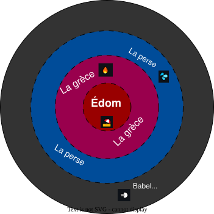
pour agrandir/diminuer la taille de l'image avec le scroll de la souris : shift+mousewheel ou alt+mousewheel
J'eus quelques difficultés à comprendre la distinction entre grèce, perse et babel. J'ai encore des doutes actuellement (septembre 2023)
Babel = (statues babylonniennes) La perse = le corps l'argent? ou argent+sensualité? La grèce = l'orgueil de l'esprit? ou argent+sensualité+orgueil de l'esprit? Edom = rome = sensualité+argent+orgueil?
Babel, la perse et la grèce ne serait chacune qu'un aspect du démoniaque, chez un individu, mais Édom, ce serait une propension "démoniaque" qui aurait entièrement l'individu : - pour ses instincts sexuels (babel) - par son envie de pouvoir (la perse) la perse = babel+la perse? - par sa psyche (la grèce) la grèce = simplement la grèce ou la grèce+la perse+babel? Édom = babel+la perse+la grèce ?
Judaïsme
Dans la perspective du Christianisme tel que je le comprendrait
L'air
Babel
chair + essentiellement pouvoir
mais encore des dieux (statues babyloniennes)
L'eau
La perse
chair + essentiellement argent
mais encore des dieux (dieux perses)
Le feu
La grèce
chair+argent+pouvoir + dieux
mais encore des dieux (dieux grecs)
La terre
Rome
argent+chair+pouvoir sans Dieu
pour la plupart : apostasie : plus de Dieu(x) : nihilisme - argent généralisé : capitalisme - chair généralisée (corps +ou- dénudés) - pouvoir non laissé à Dieu (rationalisme, école, diplômes, politique)
pour agrandir/diminuer la taille de l'image avec le scroll de la souris : shift+mousewheel ou alt+mousewheel
Se la settimana avesse più giorni, te ne avrei imposto quattro di penitenza per il Sacerdozio. Perché esso è necessario alla vita dello spirito come i quattro elementi vitali alla Terra: luce, acqua, aria e fuoco. Ma come può esser luce se è spento o offuscato? Ma come può esser acqua se è arido? Ma come può esser respiro se è, di suo, asfittico? Ma come può esser fuoco se è gelo?
D'après Valtorta, ce serait : lumière, eau, air et feu.
Une autre vidéo de Raphaël Sadin, sur ces 4 empires (vidéo sortie quelques années après la première vidéo plus haut, sur les 4 empires)
Quelque chose de complexé/problématique chez les Circoncis?
Hypothèse : Dieu = la Trinité
Incirconcis
Circoncis, en particulier les Judaïsants
Depuis à peu près deux millénaires, de base, à la naissance, plus de proximité avec Dieu que les Circoncis, dans l'hypothèse où Dieu serait le Fils et qu'il n'exigea pas la circoncision, il y a ~2000 ans.
Par contre, à partir de la puberté, sexuellement davantage en danger d'être excité et de s'écarter davantage de Dieu qu'un circoncis.
De base une amplitude émotionnelle plus grande qu'un circoncis. Par contre, en général, dans cette époque ils tombent plus bas qu'un circoncis.
Depuis à peu près deux millénaires, de base, à la naissance, davantage écarté de Dieu qu'un Circoncis, mais en général, dans cette époque (début XXIème siècle), plus stables sexuellement.
pour agrandir/diminuer la taille de l'image avec le scroll de la souris : shift+mousewheel ou alt+mousewheel
Circoncision - Stabilité sexuelle - Avenir à considérer
Considérations sur la circoncision. Hypothèse de base : le Fils = Dieu
Étape 1
Étape 2
Vers l'an 0
Étape 3 De l'an ~0 jusqu'au début du XIème siècle.
Étape 4 Délivrance finale Vers l'an 2000? d'ici quelques mois? années?
Étape 5
1er fiat
2ème fiat
3ème fiat
Déroulé de la circoncision ? --> Déroulé de la circoncision ?--> Déroulé de la circoncision ?--> Déroulé de la circoncision ?
Monde méli-mélo, pagaille.
Trop d'égarement sexuel. Dieu décide de choisir les juifs en tant que "sacrifiés mutilés". La circoncision est mise en place.
Extrait Anne-Catherine Emmerich
Lorsqu'Adam et Eve eurent consommé le fruit, ils furent comme ivres, et leur consentement au péché provoqua de grands changements en eux. Car, le serpent étant auprès d'eux, ils étaient pénétrés de son influence, et l'ivraie s'introduisait parmi le bon grain. La circoncision a été établie comme un signe de châtiment et d'expiation : de même que le premier surgeon de la vigne est émondé, pour éviter que le vin ne devienne aigre, mauvais et inutilisable, de même homme fut soumis à ce rite, comme s'il devait par là retrouver sa noblesse.
Les juifs alors relativement se stabilisent et peuvent devenir les gouvernants du monde
Appa-rition du Fils et du Christia-nisme.
Le pardon est mis en place.
Plus d'obligation de la circoncision
Monde méli-mélo, pagaille, mais tout de même nouveau fiat, rédemption. (Moins la pagaille qu'avant, en quelque sorte.) Les Judaïsants, et à plus large mesure, les Circoncis sont malheureux : Ils sont plus stables que la moyenne, mais pas à leur place de commandement/ dirigeants, par rapport aux agnostiques. En particulier les Judaïsants ne peuvent globalement pas comprendre les problèmes émotionnels/ psychiques des non-circoncis et donc aussi être à même de les aider. Beaucoup de Judaïsants, au lieu d'aider ceux qu'ils appelèrent parfois "goys", continuent de les considérer comme veuls et à les exploiter. Les Judaïsants exploitent les "goys", le "goy" est malade, souffrant, "l'extrême droite" pourchasse les Judaïsants.
Apparition d'un Mahdi/ Machia'h/ Christ/ grand Monarque.
Il fait (font ?) comprendre aux Circoncis les problèmes des Incirconcis. Il fait(font ?) la jonction circoncis, Incirconcis. Il(s) remet(tent) les peuples à leur place. Les Musulmanisans et les Judaïsants retournent à leur place, avec l'intermédiaire du Mahdi, du Machia'h, du grand Monarque. Les Circoncis trouvent une compensation à leur "mutilation", puisque qu'ils sont tout de même plus stables sexuellement et psychiquement que les agnostiques, et leur compensation est qu'ils peuvent tout de même ramener les agnostiques vers Dieu.
L'antiChrist (du moins d'après Hildegarde de bingen), devrait procéder à des circoncisions forcées.
L'Humanité est stabilisée sexuellement, les Judaïsants et Musulmanisans reconnaissent le Fils et arrêtent la circoncision.
Diverses considérations ''d'extrême droite'' sur les ''Juifs'' et les Arabes/''Musulmans''
Est-ce que diverses considérations de Gens parfois dit d'extrême droite concernant les "Juifs" me semblèrent vraies? En partie, oui, je dirais.
Est-ce que diverses considérations d'extrême droite selon lesquels, proportionnellement, beaucoup de Judaïsants furent et seraient encore à des postes de pouvoir, seraient vrais? Eh bien, je dirais qu'en partie, oui : ce me sembla vrai. De plus, il me sembla vrai aussi, par ailleurs, qu'il y ait eut une prévalence proportionnellement beaucoup plus importante de Musulmanisans impliqués dans divers attentats (en particulier en france, au cours des dernières décennies).
Par contre, attention, en général, "l'extrême droite" me semblèrent partir de l'à priori que les Judaïsants et les Musulmanisans, seraient de base, mauvais. Or les juifs et les Musulmanisans seraient plutôt à considérer comme des mutilés, des victimes pour lesquelles il y aurait de quoi avoir une indulgence, de la charité, ce qu'en général, l'extrême droite ne me sembla pas tellement, en apparence du moins, prendre en compte. Autrement rédigé, ce n'est pas parce que beaucoup de Judaïsants ou de Musulmanisans furent malades, qu'il y aurait à considérer que de base, ils soient mauvais. Ce raccourci me semblerait "démoniaque". Plus à même d'aggraver la situation plutôt que de la résoudre.
Je me demande donc si en fait, pendant environ 2 millénaires, il y eut une sorte de système sur terre qui aurait été formé ainsi :
Circoncision et 2ᵉ fiat, fiat de rédemption, pendant environ 2000 ans
Judaïsants circoncis et Circoncis "à la juive"
Agnostiques
Non-circoncis et purs
Agnostiques
Musulmans circoncis
Quantité
quelques millions dans le monde
Des milliards
Une minorité dans le monde
Des milliards
Plusieurs centaines de millions
Depuis deux millénaires en particulier, tout le monde serait dans une société plus ou moins malade. (excepté certaines Gens isolés sur des iles désertes ou dans la forêt amazonienne)
Judaïsant aux capacités psychiques supérieures à la moyenne
Créature instable sexuellement
Le plus stable qui soit. Stabilité acquise par dépassement de soi, contrôle des passions.
Créature instable sexuellement
Créature plus stable que les pécheurs Incirconcis, mais moins stable que les Judaïsants
MaisJudaïsant tout de même complexé, écarté, par défaut, de Dieu
Judaïsant qui n'est pas à sa place de pouvoir et d'échange dans le monde
Judaïsant qui croit avoir besoin de maintenir un système de contrôle en place : l'école, qui lui permet d'avoir la première place, la mixité de genre (car le Judaïsant, en général plus stable sexuellement, s'en sort relativement bien)
"Ma volonté est en perpétuel mouvement. Elle ne s'arrête jamais. Si son mouvement cessait, ce qui est impossible, la Création n'aurait plus de vie, le Soleil, le ciel étoilé, les arbres, l'eau, le feu, les créatures, tout se dissoudrait dans le néant Ceci signifie que ma Volonté avec son évolution éternelle, -est la vie de toute chose créée, -Elle lie tout, -Elle est plus que l'air qui permet de respirer, développer, pousser tout ce qui sort de nos mains. Tu comprends donc l'affront subi par les créatures, qui, alors qu'Elle est la vie de tout et le centre de toute chose, sans Elle rien ni aucun bien n'existerait, ne veulent reconnaître ni sa domination, ni que sa vie qui coule en elles C'est pourquoi celle qui reconnaît la Vie de ma Volonté en elle et en toute chose, est le triomphe de notre Volonté et la conquête de nos victoires, elle est la contrepartie de notre amour au mouvement perpétuel, notre Volonté la liant à toute la Création, lui faisant faire tout le bien opéré par ma propre Volonté. Par conséquent, tout lui appartient et moi Je l'aime tellement, au point de ne savoir rien faire sans elle, du fait que, en vertu de ma Volonté, nous sommes la même vie, le même amour, une seule palpitation, un seul soupir." Le livre du Ciel tome 19, téléchargé depuis lumenluminis


 "Oh ! amis ! Savez-vous par quel sentier vient Satan ? Trois sont les chemins généralement battus, et il en est un qui ne manque jamais. Trois :
"Oh ! amis ! Savez-vous par quel sentier vient Satan ? Trois sont les chemins généralement battus, et il en est un qui ne manque jamais. Trois :